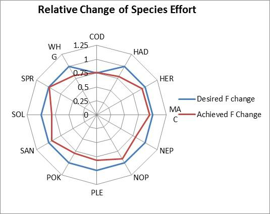
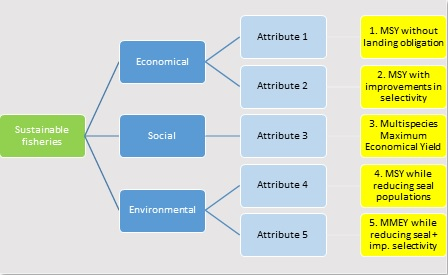

Decision Support Framework
Decision Support Framework

The MareFrame Decision Support Framework is a pragmatic planning process for moving towards an Ecosystem Approach to Fisheries Management. Click on the map of Europe to the left to see all case studies or explore the current case study below.
Case Study: North Sea
Objective: Develop a North Sea multi-species fish system that could help clarify the stakeholder’s general concerns of:
- needing to achieve Fmsy
- meeting the Landing Obligation
- avoid the risk of incompatible regulations
by providing an interactive tool that would allow stakeholders explore the trade-offs (as far as possible) between any plausible management measure Pelagic fisheries might additionally be considered as a segment to study in greater detail
Management Problem
The NS AC is well committed to the long term management aims of the EU. However, they are in need to learn to identify and evaluate their short and long term trade-offs (including EAFM and economic ones) of the (often complicated) transitional measures they need in order to make progress, while keeping the fishing industry and other stakeholder inside
Management Setting
The North Sea has a politically complex governance context. Eight coastal nations (counting Scotland as one) have their own distinctive but overlapping fisheries. At the same time, within the EU, the recently reformed 2013 CFP regulates fisheries. A combination of input and output regulation governs the fisheries. Total Allowable Catches (TAC) management, principle of relative stability, a mixture of technical measures (mesh size and gear restriction, minimum landing size closed areas) are all applied for management of the fisheries. In addition, the reformed CFP has introduced the Landing Obligation for the North Sea from the 1st of January 2015 for industrial fisheries and certain small pelagic fisheries; and from the 1st of January 2016 for the firs set of demersal species. An agreement between the EU and Norway, on the management of share fish stocks in the North Sea, grant both EU and Norwegian fishermen with valuable access to fish stocks and provides stability to the sector.
Almost all commercial important stocks and fisheries are managed by means of a multi-annual plan. Additional specifications are to be included in these plans as part of the new 2013 CFP. Multi-annual plans in the North Sea have been adopted for cod, northern hake, sole and plaice.
Additionally, other set of EU Directives, such as the Habitats Directive, the Birds Directive, Marine Strategy Framework Directive and Water Framework Directive, have a direct or indirect influence in the management of fisheries.
Main objectives and criteria
Stakeholders should be able to explore possible trade-offs and outcomes both in the short and long term and thereby help making informed decisions regarding fisheries management
| Objective | Indicators |
|---|---|
| Achieve sustainable and economically viable fisheries |
|
| Maintain the ecosystem structure of the North Sea |
|
Green Model

Multi-Criteria Analysis

Management Scenarios
Some management alternatives have been identified but they are still pending to be evaluated with the stakeholders (next meeting will be in November 2015)
A. Current path (“default” alternative)
Establishes a baseline for comparing alternative management approaches. The baseline includes the implemented Landing Obligation for the North Sea (in place since 1st of January 2015 for industrial fisheries and certain small pelagic fisheries; and from the 1st of January 2016 for the firs set of demersal species)
B. Mixed Fisheries MEY